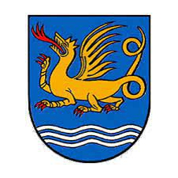

Drottning av Tyskland. Blev ca 73 år.
omkring 895 Engern, Sachsen, Tyskland. [1]
968 Qedingburg, Tyskland. [1]
Matilda av Ringelheim (ca 892 – 14 mars 968 [1] ), även känd som Sankta Matilda , var en saxisk adelsdam. På grund av sitt äktenskap med Henrik I 909 blev hon den första ottoniska drottningen . [2] Hennes äldste son, Otto I , återställde det heliga romerska riket 962. [3] Mathilde grundade flera andliga institutioner och kvinnokloster. Hon ansågs vara extremt from, rättfärdig och välgörande. Mathildes två hagiografiska biografier och Saxarnas gärningar fungerar som auktoritativa källor om hennes liv och verk.
Tidigt liv och äktenskap med Henry I
Mathilde, dotter till Reinhild och den sachsiske greve Dietrich (själv en ättling till den sachsiske hertigen Widukind som kämpade mot Karl den Store) föddes omkring 892 och växte upp av sin mormor Mathilde i Herford Abbey . Hon hade tre systrar; Amalrada, Bia och Fridarun, som gifte sig med Karl III av Västfrankien , kung av Västfrankien; och en bror Beuve II, biskopen av Châlons-sur-Marne. [1] På grund av Fridaruns äktenskap med greve Wichmann den äldre , fanns det en allians mellan huset Billung och den ottoniska familjen, som utökade sina ägodelar västerut. [4]År 909 gifte hon sig med Henrik, vid den tiden hertig av Sachsen och senare östfrankisk kung, efter att hans första äktenskap med Hatheburg av Merseburg avbröts. [5] [2] Hon födde fem gemensamma barn: Otto (912-973), som kröntes till den helige romerske kejsaren 962; [3] Henrik (919/22-955), som utnämndes till hertig av Bayern 948; [2] Bruno (925-965), som valdes till ärkebiskop av Köln 953 och hertig av Lorraine 954; [6] Hedwig (d. 965/80), som gifte sig med västfrankernahertig, Hugh den store ; och Gerberga (d. 968/69), som först gifte sig med Gilbert, hertig av Lorraine och senare den karolingiske kungen Ludvig IV av Frankrike .
År 929 fick Mathilde sin hemgift , som Henrik gav henne i den så kallade Hausordnung . Den bestod av varor i Quedlinburg , Pöhlde , Nordhausen , Grona (nära Göttingen ) och Duderstadt . [1] Under sin tid som drottning intresserade hon sig för kvinnliga kloster och sägs ha haft ett inflytande på sin mans regeringstid genom att ha en stark känsla för rättvisa. [7]
Livet som änka
Efter Henriks död 936 i Memleben begravdes han i Quedlinburg, där drottning Mathilde grundade ett kloster samma år. [8] Hon bodde där under de följande åren och tog hand om familjens minnesmärke . Därmed blev Quedlinburg Abbey det viktigaste centrum för bön och åminnelse av de döda i det östfrankiska riket. [9] Liksom i andra kloster växte döttrar av adliga familjer upp i Quedlinburg, för att senare bli abbedisser för att säkra familjens inflytande. En av dem var hennes eget barnbarn Matilda , dotter till Otto I och Adelheid av Bourgogne, till vilken hon överlämnade ledning av klostret 966, efter 30 års ledarskap. Den yngre Mathilde blev därför den första abbedissan i klostret i Quedlinburg. [10] Med sina andra varor grundade drottning Mathilde ytterligare kloster, ett av dem 947 i Enger. [11] Hennes sista stiftelse var klostret Nordhausen 961. [12]
Mathildes hantering av sin hemgift, som hon hade fått av kung Henrik I före hans död, var föremål för en tvist mellan henne och Otto I under åren 936–946. Otto gjorde anspråk på sin mors ägodelar, vilket så småningom ledde till att hon flydde i exil. Ottos hustru, drottning Eadgyth , ska ha åstadkommit försoningen där Mathilde lämnade sitt gods och Otto fick förlåtelse för sina handlingar. [13]
De exakta omständigheterna kring denna fejd är fortfarande kontroversiella än i dag, men för att skydda sina varor förvärvade Mathilde påvliga privilegier för alla kloster i östra Sachsen under tiden före hennes död i början av 968. [14] Dessa ansträngningar ignorerades dock. när Theophanu , Otto II :s hustru , fick Mathildes hemgift efter att hon dog. [15]
Död och minne
Efter en lång tids sjukdom dog drottning Mathilde den 14 mars 968, [16] i klostret Quedlinburg. Hon begravdes i Quedlinburg Abbey, bredvid sin bortgångne make. [17] Under hela sitt liv var Mathilde dedikerad till välgörenhet och hennes andliga grunder - vilket uttrycks flera gånger i hennes två hagiografier. [18] [ sida behövs ] En minnestavla tillägnad henne finns i Walhalla-minnesmärket nära Regensburg , Tyskland. [19] Mathilde är beskyddare av St. Mathilde-kyrkan i Laatzen (Tyskland), St. Mathilde-kyrkan i Quedlinburg (Tyskland), Melkite-kyrkan i Aleppo(Syrien) och Mathilden-sjukhuset i Herford (Tyskland). Hennes festdag är den 14 mars.